Flow → Vídeo → Fotogramas: imagen izquierda = Inicio, derecha = Fin. Modelo Veo 3.1 Fast, 8 s, vertical 9:16. Mantén presionada cada imagen para guardarla.
Guárdalo como:
R60-05-T1a.mp4
Por clip: guarda Inicio y Fin, súbelos en Flow (Fotogramas), toca «Copiar prompt», pega y genera con Veo 3.1 Fast. Descarga en 1080p y guárdalo con el nombre de la tarjeta.
Veo 3.1 Fast · 10 créditos por clip · 8 s · fstudiobussines (9228). Reintento solo si el QA lo pide.
| Reel | Título | Clips | Créditos | Estado | Cuándo |
|---|---|---|---|---|---|
| 01 | El closet que se vino abajo | 10 | 100 | LISTO PARA ANIMAR | Ahora |
| 02 | Un día en AXL | 0 | 0 | TERMINADO · 100 % material real | Ya entregado |
| 03 | Le devolvemos el antes | 5 | 50 | LISTO PARA ANIMAR | Ahora |
| 04 | La cocina que se cayó a pedazos | 10 | 100 | LISTO PARA ANIMAR | Ahora |
| 05 | La pared de cables | 8 | 80 | LISTO PARA ANIMAR | Ahora |
| 06 | Mándanos tu foto | 7 | 70 | LISTO PARA ANIMAR | Ahora |
Al terminar un reel, deja los clips en Escritorio/AXL/R60/<reel> con el nombre de cada tarjeta. Yo reviso cada clip (G3) y monto.
8 clips · Veo 3.1 Fast · 80 créditos (+ reintentos solo si el QA lo pide)
Flow → Vídeo → Fotogramas: imagen izquierda = Inicio, derecha = Fin. Modelo Veo 3.1 Fast, 8 s, vertical 9:16. Mantén presionada cada imagen para guardarla.
R60-05-T1a.mp4

Flow → Vídeo → Fotogramas: imagen izquierda = Inicio, derecha = Fin. Modelo Veo 3.1 Fast, 8 s, vertical 9:16. Mantén presionada cada imagen para guardarla.
R60-05-T1b.mp4

Flow → Vídeo → Fotogramas: imagen izquierda = Inicio, derecha = Fin. Modelo Veo 3.1 Fast, 8 s, vertical 9:16. Mantén presionada cada imagen para guardarla.
R60-05-T2.mp4

Flow → Vídeo → Fotogramas: sube SOLO esta imagen como Inicio (Fin vacío). Modelo Veo 3.1 Fast, 8 s, vertical 9:16. Mantén presionada cada imagen para guardarla.
R60-05-T4.mp4

Flow → Vídeo → Fotogramas: sube SOLO esta imagen como Inicio (Fin vacío). Modelo Veo 3.1 Fast, 8 s, vertical 9:16. Mantén presionada cada imagen para guardarla.
R60-05-T8.mp4

Flow → Vídeo → Fotogramas: sube SOLO esta imagen como Inicio (Fin vacío). Modelo Veo 3.1 Fast, 8 s, vertical 9:16. Mantén presionada cada imagen para guardarla.
R60-05-T9.mp4


Flow → Vídeo → Fotogramas: imagen izquierda = Inicio, derecha = Fin. Modelo Veo 3.1 Fast, 8 s, vertical 9:16. Mantén presionada cada imagen para guardarla.
R60-05-T10.mp4


Flow → Vídeo → Fotogramas: imagen izquierda = Inicio, derecha = Fin. Modelo Veo 3.1 Fast, 8 s, vertical 9:16. Mantén presionada cada imagen para guardarla.
R60-05-T12.mp4
10 clips · Veo 3.1 Fast · 100 créditos (+ reintentos solo si el QA lo pide)


Flow → Vídeo → Fotogramas: imagen izquierda = Inicio, derecha = Fin. Modelo Veo 3.1 Fast, 8 s, vertical 9:16. Mantén presionada cada imagen para guardarla.
Ojo al animar: Al dar el paso atrás, ella no puede girar la cara hacia la cámara. · Las columnas laterales siguen en pie: solo cae el centro. · El abrigo termina encima del montón, no en el piso. · La ventana y la cama no se mueven con el golpe.
R60-01-c1.mp4

Flow → Vídeo → Fotogramas: imagen izquierda = Inicio, derecha = Fin. Modelo Veo 3.1 Fast, 8 s, vertical 9:16. Mantén presionada cada imagen para guardarla.
Ojo al animar: CARA: al caminar del closet a la cama, que está abajo a la derecha, viene hacia la cámara. Rechazar si se le ve la cara al girar; tiene que llegar de espaldas o de lado, con el pelo tapándola. · El teléfono sale del bolsillo trasero, no aparece en la mano. La pantalla, sin texto. · El montón no se mueve. Solo se asienta el polvo; la ropa colgada y los zapatos no cambian de forma.
R60-01-c2.mp4


Flow → Vídeo → Fotogramas: imagen izquierda = Inicio, derecha = Fin. Modelo Veo 3.1 Fast, 8 s, vertical 9:16. Mantén presionada cada imagen para guardarla.
Ojo al animar: Los instaladores entran por el borde derecho con las 4 cajas encajadas y la caja de herramientas: nada aparece en el piso sin que lo traigan. · Al entrar y girar hacia el montón, perfil o barba = rechazo. · La tablita y el polvo que quedan bajo las cajas (x 386-456 / y 1163-1197) pueden desaparecer de golpe: aceptarlo solo si una caja los tapa al bajar. · La caja de herramientas tapa la ropa negra y la caja blanca de la derecha: tienen que seguir detrás, no esfumarse. · Un solo suéter entra en la primera caja; las otras 3 quedan vacías. · El montón y la cama, quietos. La luz de alba no sube.
R60-01-c3.mp4


Flow → Vídeo → Fotogramas: imagen izquierda = Inicio, derecha = Fin. Modelo Veo 3.1 Fast, 8 s, vertical 9:16. Mantén presionada cada imagen para guardarla.
Ojo al animar: Los laterales largos salen al hombro por el borde derecho: que no atraviesen la cama ni la ventana. · Las 4 cajas y la caja de herramientas no se mueven. · Al girar para salir, perfil = rechazo. · La mancha de sol del piso queda fija.
R60-01-c4.mp4

Flow → Vídeo → Fotogramas: imagen izquierda = Inicio, derecha = Fin. Modelo Veo 3.1 Fast, 8 s, vertical 9:16. Mantén presionada cada imagen para guardarla.
Ojo al animar: Entra por la derecha con la lona enrollada; al desenrollarla, la lona no empuja las cajas ni la caja de herramientas. · El láser queda APAGADO hasta el final: ni una línea roja. · Termina arrodillado con el dedo en el botón y la cabeza agachada, sin mejilla. Si el último cuadro no calza con f07 (que tiene la cabeza parchada), el fundido a f07L hace fantasma.
R60-01-c5.mp4


Flow → Vídeo → Fotogramas: imagen izquierda = Inicio, derecha = Fin. Modelo Veo 3.1 Fast, 8 s, vertical 9:16. Mantén presionada cada imagen para guardarla.
Ojo al animar: CARA: el instalador derecho ya arranca mostrando el contorno de la mejilla y la ceja (x 795-815 / y 590-650). Rechazar el clip si gira más y se ve la nariz, el ojo o la barba. Si pasa, conviene usar en el montaje el tramo final, que calza con f09 (de espaldas). · El módulo se endereza rígido: no se dobla, no se derrite y no atraviesa al módulo vecino (hoy lo pisa unos 10 px arriba a la derecha). · El nivel sale del cinturón; no aparece en la mano. · El de la izquierda camina unos 150 px a la derecha: que no se deslice sin pasos. · El taladro, la caja de herramientas, la lona y las 4 cajas, quietos.
R60-01-c6.mp4


Flow → Vídeo → Fotogramas: imagen izquierda = Inicio, derecha = Fin. Modelo Veo 3.1 Fast, 8 s, vertical 9:16. Mantén presionada cada imagen para guardarla.
Ojo al animar: La hoja abierta asoma por encima del marco (y 174-214): al cerrarse, tiene que volver al ras del marco sin estirarse. · La mano pasa de agarrar el canto a quedar plana sobre el vidrio, sin dedos que se fundan con el vidrio. · La matera y el jarrón que se ven detrás del vidrio izquierdo (x 245-290 / y 785-870) no se mueven ni desaparecen, y las demás puertas no se abren. · Los rayos de sol del piso y el cielo dorado quedan fijos. El LED sigue apagado. · La esquina queda igual, incluidos el bolso con su placa lisa (sin que vuelva un emblema) y los 2 relojes. · Cabeza: si gira hacia la cámara o hacia la izquierda y se ve mejilla, rechazar.
R60-01-c7.mp4


Flow → Vídeo → Fotogramas: imagen izquierda = Inicio, derecha = Fin. Modelo Veo 3.1 Fast, 8 s, vertical 9:16. Mantén presionada cada imagen para guardarla.
Ojo al animar: Solo con f11b parchada y el prompt corregido. Si no, Veo inventa la tapa o mueve la matera. · Ella entra por la derecha, por detrás de la isla: que no atraviese la isla ni aparezca en el centro de golpe. · CARA: entra caminando hacia la izquierda; perfil = rechazo. Termina de espaldas. · Los suéteres llegan en sus manos y terminan apoyados en la repisa a la altura de la cabeza (y≈600), sin flotar. · La esquina (cajas tapadas, matera, cajas de tela, caja de cartón, sombrero, bandeja y relojes), quieta. El LED, apagado; el resplandor no cambia. · La acción ocupa el clip de 8 s y el montaje usa 3 s (34,8-37,8): tomar el tramo final.
R60-01-c8a.mp4


Flow → Vídeo → Fotogramas: imagen izquierda = Inicio, derecha = Fin. Modelo Veo 3.1 Fast, 8 s, vertical 9:16. Mantén presionada cada imagen para guardarla.
Ojo al animar: Levanta las 4 cajas encajadas con el cartón encima en un solo bloque: el cartón no se desliza ni se desvanece. · CARA: al cruzar delante de la isla hacia el borde derecho camina de lado; perfil = rechazo. · La ropa, los bolsos, las cajas de guardado, la bandeja, la matera y el jarrón del closet no se mueven. El LED sigue apagado y el cielo con luces de ciudad no cambia.
R60-01-c8b.mp4


Flow → Vídeo → Fotogramas: imagen izquierda = Inicio, derecha = Fin. Modelo Veo 3.1 Fast, 8 s, vertical 9:16. Mantén presionada cada imagen para guardarla.
Ojo al animar: CARA: entra por la derecha y cruza entre la isla y la cama de lado; perfil = rechazo. Termina de espaldas, con el pelo tapándole la cara. · El LED, estable: no parpadea ni se apaga. · f14 mide 941×1671: recortar al comparar el último cuadro.
R60-01-c9.mp4
5 clips · Veo 3.1 Fast · 50 créditos (+ reintentos solo si el QA lo pide)


Flow → Vídeo → Fotogramas: imagen izquierda = Inicio, derecha = Fin. Modelo Veo 3.1 Fast, 8 s, vertical 9:16. Mantén presionada cada imagen para guardarla.
Ojo al animar: Cara: el prompt dice «glances at the far window corner». Si gira la cabeza, sale de perfil. Quitar «glances»: que ya mire la esquina y solo camine. · Revisar al 25-50 % que la placa de la maleta no reaparezca y que no se le caiga ningún suéter. · Sale por el borde derecho a lo largo del vidrio. La maleta (x 480-590) está entre ella y el vidrio: que la arrastre y no la atraviese. · Si no se aplica el arreglo, el cuarto se oscurece ~10 % durante el clip.
R60-03-T2.mp4

Flow → Vídeo → Fotogramas: imagen izquierda = Inicio, derecha = Fin. Modelo Veo 3.1 Fast, 8 s, vertical 9:16. Mantén presionada cada imagen para guardarla.
Ojo al animar: Los 5 cuadritos tienen que terminar exactamente en (27,639) (182,635) (292,632) (376,631) (440,629). Veo suele pegarlos en otro sitio y deslizarlos al final. Mirar el cuadro del 75 %. · Que no deje marcas de lápiz ni cinta suelta (F2 no tiene) y que el metro y el rollo salgan con él.
R60-03-T3.mp4

Flow → Vídeo → Fotogramas: imagen izquierda = Inicio, derecha = Fin. Modelo Veo 3.1 Fast, 8 s, vertical 9:16. Mantén presionada cada imagen para guardarla.
Ojo al animar: La cinta se pega progresivamente, de (0,1125) a (512,835). No puede estar entera desde el principio ni aparecer de golpe. · Los cuadritos de la pared no se tocan. Sin el arreglo, la toma falla seguro (enchufe y pilastra que aparecen).
R60-03-T4.mp4

Flow → Vídeo → Fotogramas: imagen izquierda = Inicio, derecha = Fin. Modelo Veo 3.1 Fast, 8 s, vertical 9:16. Mantén presionada cada imagen para guardarla.
Ojo al animar: La rendija con el techo es fina (5-8 px). Veo puede pegarla al techo o rozarlo al enderezarla: tiene que pararse de canto. · El canto derecho de la columna (x≈497) toca el marco de la ventana (490-510): mirar que no atraviese el marco ni el vidrio. · La sombra en la pared (x 312-380) tiene que llegar con la columna, no antes. · Ningún cuadrito azul se ve a través de la columna.
R60-03-T5.mp4


Flow → Vídeo → Fotogramas: imagen izquierda = Inicio, derecha = Fin. Modelo Veo 3.1 Fast, 8 s, vertical 9:16. Mantén presionada cada imagen para guardarla.
Ojo al animar: Tramo vacío solo de y 855 a 1083. Con el prompt actual («up to the middle shelf»), Veo puede montar una tira encima de la que ya está, o duplicarla. Aplicar el cambio de texto. · Cruce en primer plano: entra por el borde inferior derecho y la ranura está abajo a la izquierda (x≈288). Tiene que cruzar de lado cerca de la cámara, lo que fisica[3] prohíbe. Que entre por el borde inferior izquierdo o que el Animador lo acepte a sabiendas. · Ningún LED se enciende; los paneles del vidrio, el listón y las 2 piezas chicas del piso, quietos.
R60-03-T9.mp4
10 clips · Veo 3.1 Fast · 100 créditos (+ reintentos solo si el QA lo pide)
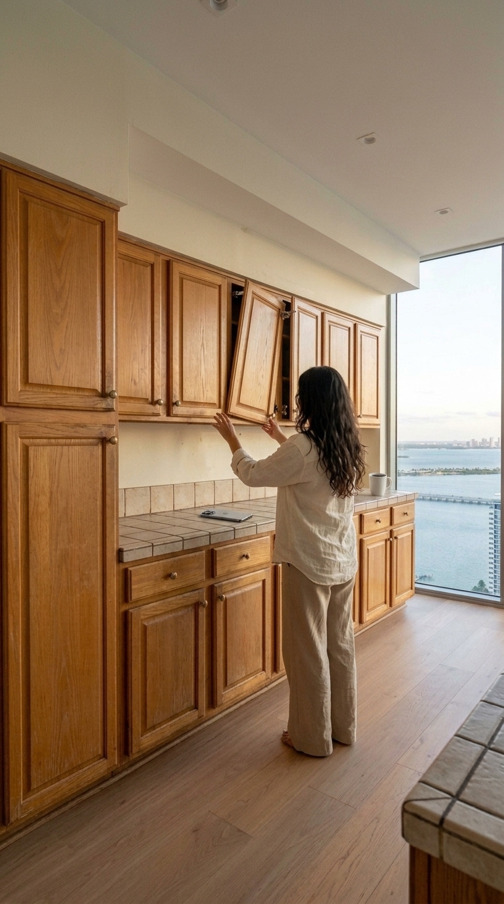
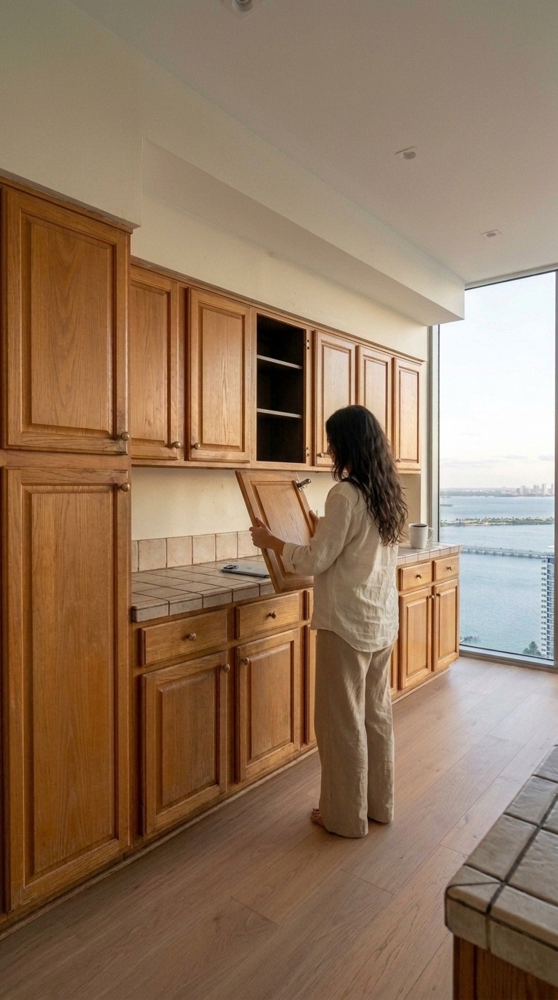
Flow → Vídeo → Fotogramas: imagen izquierda = Inicio, derecha = Fin. Modelo Veo 3.1 Fast, 8 s, vertical 9:16. Mantén presionada cada imagen para guardarla.
Ojo al animar: Sin cambios desde la ronda 1. La puerta que cae es la x352-428, una a la IZQUIERDA de la X (x424-486), y la voz de K8 dice «justo donde estaba la vieja». Decide el Showrunner: cambiar la voz de K8 (gratis) o aceptarlo. La taza llena y de pie en x562-588 tiene que seguir quieta. El enchufe ya no está (F02 con la receta). Montaje: si Veo arranca la bisagra equivocada, recortar K1 antes del tirón final y hacer corte seco a K2.
R60-04-K1.mp4
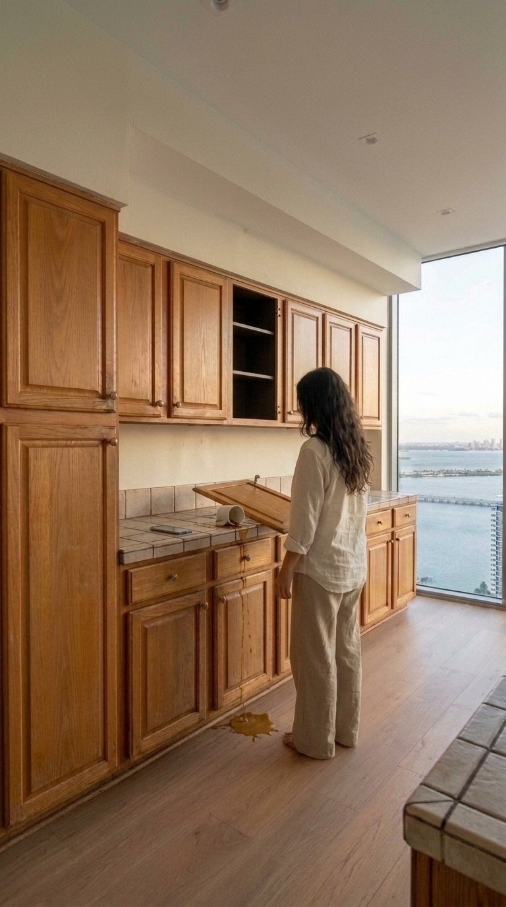
Flow → Vídeo → Fotogramas: imagen izquierda = Inicio, derecha = Fin. Modelo Veo 3.1 Fast, 8 s, vertical 9:16. Mantén presionada cada imagen para guardarla.
Ojo al animar: RIESGO ALTO. Entre F02 y F03, la taza pasa de estar de pie a la derecha de la cadera (x562-588) a estar volcada a la izquierda (x328-372), y el teléfono se corre de x305-370 a x228-290. No se arregla pegando, porque la historia necesita el derrame. Montaje: recortar K2 desde 0,3 s hasta el IMPACTO de la puerta contra la encimera y hacer CORTE SECO al primer cuadro de K3 (=F03), para que el cambio quede escondido en el corte del golpe. Si en G3 la taza desaparece a la vista en los cuadros del 25 o 50 %, pasar el punch-in de K1-K2 a 1,35x anclado a la izquierda (recorte x0-570), así la taza vieja nunca entra en cuadro. Se pierde nitidez y se recorta el borde derecho de ella. Aplicar antes la receta F03 (sin enchufe).
R60-04-K2.mp4
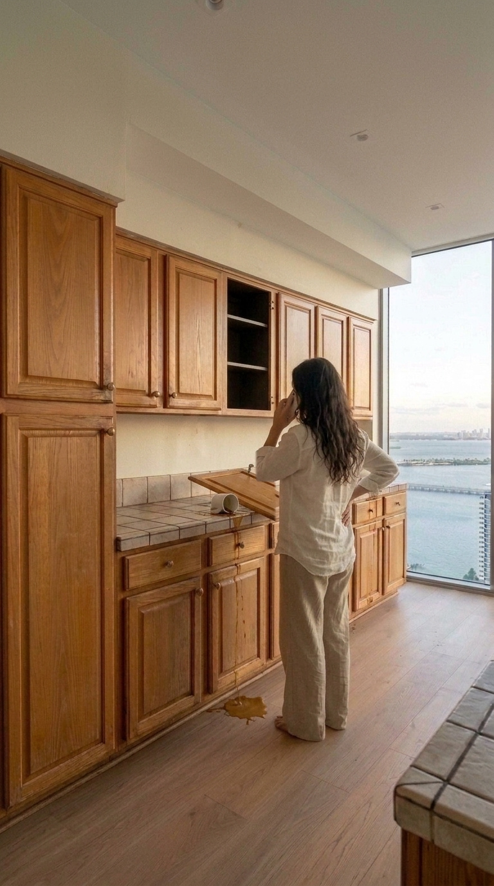
Flow → Vídeo → Fotogramas: imagen izquierda = Inicio, derecha = Fin. Modelo Veo 3.1 Fast, 8 s, vertical 9:16. Mantén presionada cada imagen para guardarla.
Ojo al animar: Con las recetas F03 y F04, todo queda quieto salvo ella: la puerta, la taza volcada, el café de la encimera, el hilo y el charco de la izquierda. Riesgo: tiene que estirar el brazo derecho unos 150 px a la izquierda para agarrar el teléfono (x228-290) sin mover los pies. Veo puede teletransportarlo, o girarle la cabeza y mostrar el perfil (rechazo de la ronda 1). Montaje: recorte 0,0-3,5. Si el teléfono salta, recortar desde el momento en que ya está en la oreja y hacer corte seco desde K2. El charco no puede crecer ni moverse.
R60-04-K3.mp4
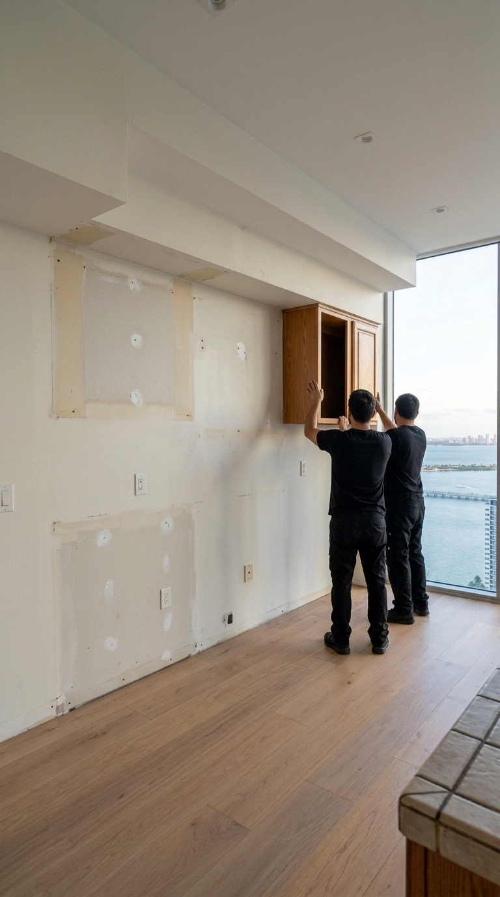
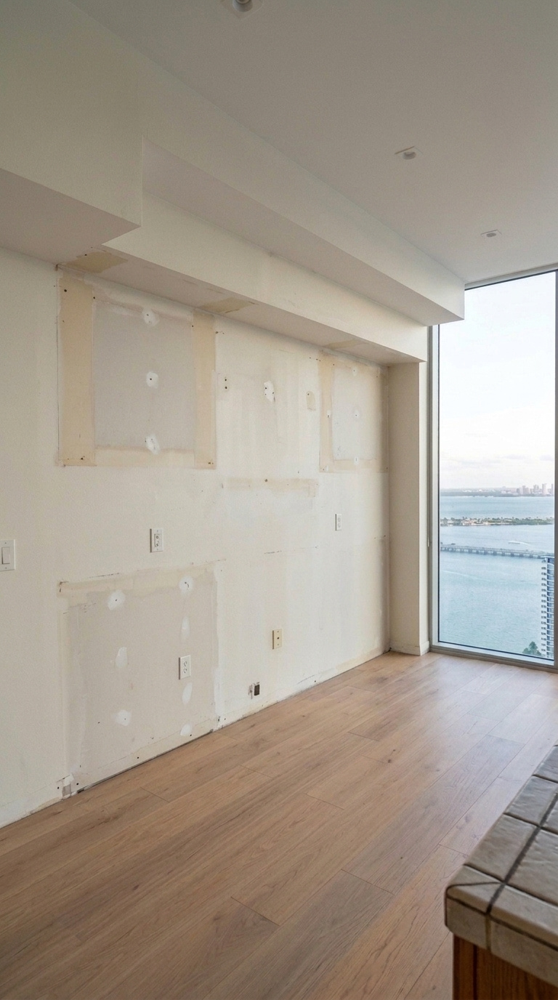
Flow → Vídeo → Fotogramas: imagen izquierda = Inicio, derecha = Fin. Modelo Veo 3.1 Fast, 8 s, vertical 9:16. Mantén presionada cada imagen para guardarla.
Ojo al animar: Sin cambios desde la ronda 1. La isla de azulejos (x620-768, y≥1020) está en el camino de la salida. Las caras al caminar hacia la cámara. La caja no puede cambiar de tamaño. Montaje: el preferido es 2,0-6,0 a 1,0x.
R60-04-K4.mp4
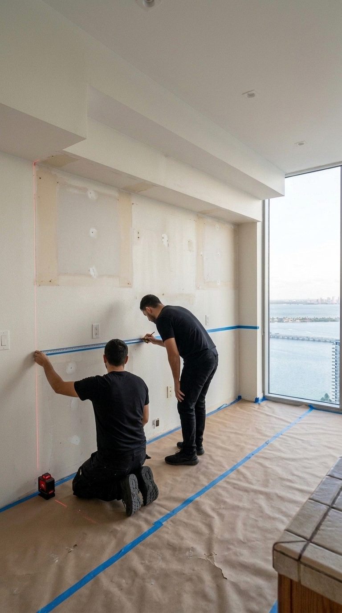
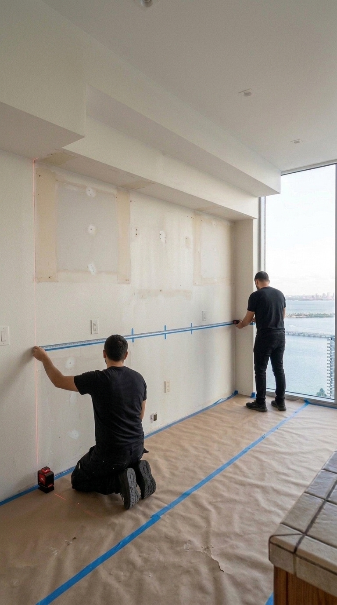
Flow → Vídeo → Fotogramas: imagen izquierda = Inicio, derecha = Fin. Modelo Veo 3.1 Fast, 8 s, vertical 9:16. Mantén presionada cada imagen para guardarla.
Ojo al animar: BLOQUEADO: la F08 actual no sirve como Fin (es hija de la F07 vieja, cambia las paredes y borra la isla) y no se arregla pegando. Decide el Showrunner: (a) una ronda técnica de NB2 gratis: borrar en Flow el recurso axl04_F07 viejo y rehacer F08 editando la F07 nueva. El fallo fue de la herramienta y no del prompt. (b) Si no, en montaje: K5 = F07 quieta con punch-in lento de 1,0 a 1,25x sobre la línea azul (15,0-19,0 s), con el clic y el zumbido de la cinta, y corte seco a la toma real del taller. 0 créditos, sin Veo. En la F07: perfil límite del que está de pie y marcas de la cinta sin números.
R60-04-K5.mp4
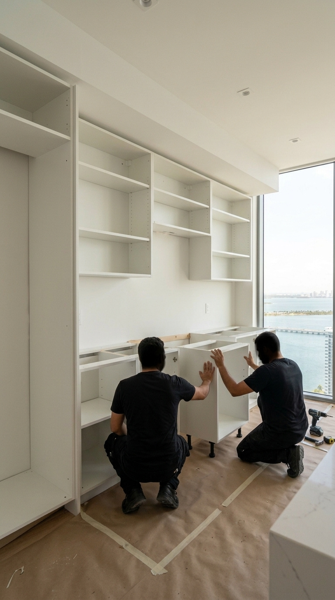
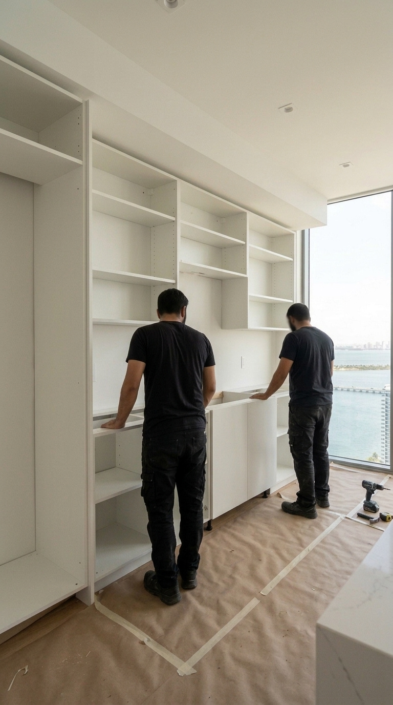
Flow → Vídeo → Fotogramas: imagen izquierda = Inicio, derecha = Fin. Modelo Veo 3.1 Fast, 8 s, vertical 9:16. Mantén presionada cada imagen para guardarla.
Ojo al animar: Sin cambios desde la ronda 1. Son dos acciones (empujar y ponerse de pie). Los perfiles borrosos pueden convertirse en caras. La isla de cuarzo sale antes de la encimera. Montaje: si la segunda acción molesta, recortar a 0,0-3,5 (solo el empujón) y hacer corte seco a K7.
R60-04-K6.mp4
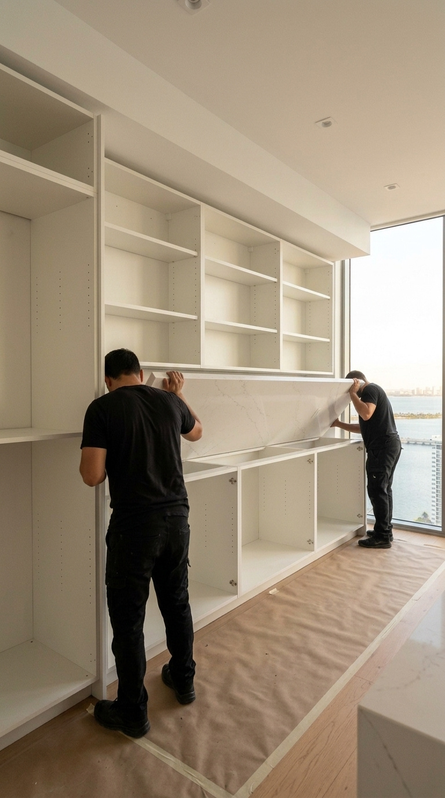
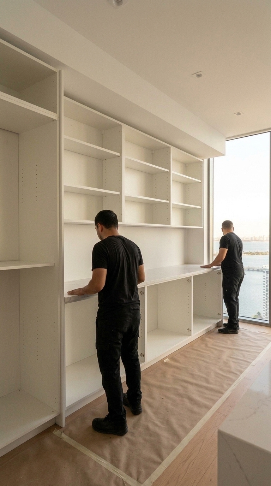
Flow → Vídeo → Fotogramas: imagen izquierda = Inicio, derecha = Fin. Modelo Veo 3.1 Fast, 8 s, vertical 9:16. Mantén presionada cada imagen para guardarla.
Ojo al animar: F12 aprobada: una sola losa y sin backsplash. Sigue el riesgo de la ronda 1: el canto de la losa en F11 (y≈645) roza el fondo de los altos (y≈640) y, al bajarla, puede atravesarlos o doblarse. Montaje: si pasa, recortar a la segunda mitad (losa ya bajando, 2,5-4,5) y hacer corte seco desde la toma real.
R60-04-K7.mp4
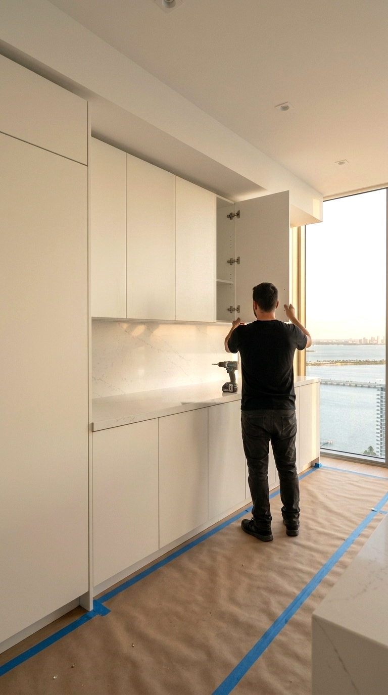
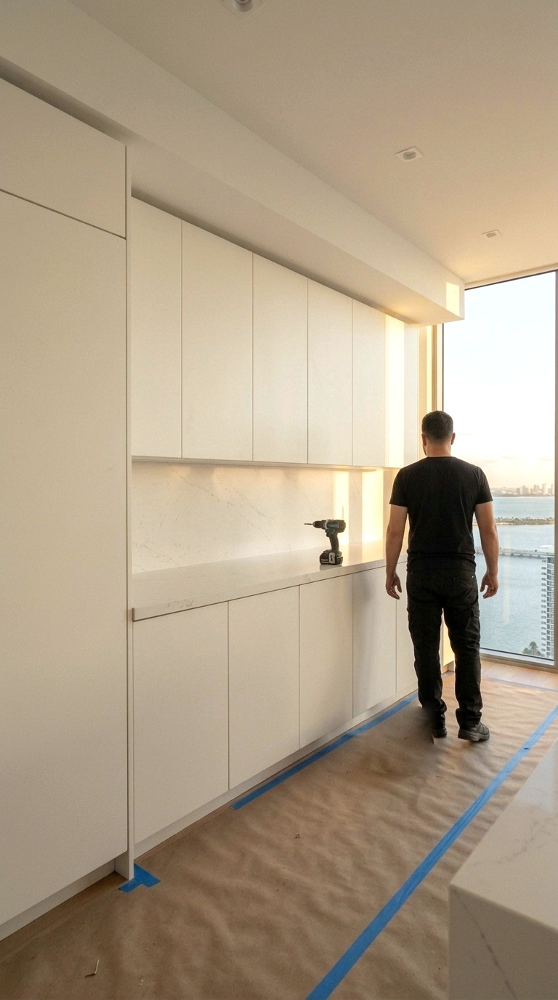
Flow → Vídeo → Fotogramas: imagen izquierda = Inicio, derecha = Fin. Modelo Veo 3.1 Fast, 8 s, vertical 9:16. Mantén presionada cada imagen para guardarla.
Ojo al animar: Con las recetas F13 y F14: las mismas puertas cerradas, el taladro quieto, sin bolso y con la misma luz (R-B 43,2, entre F12 y F15). Riesgos que quedan: el hueco abierto de F13 (x427-464) mide unos 20 px menos que la X cerrada de F14 (x424-484), así que Veo puede ensanchar o correr la puerta al cerrarla, o tomar el hueco de otra. Hay un tramo de cinta del zócalo que falta en F14 (x540-600) y una sombra suave en el canto de la encimera de F13 que se va. El instalador tiene que soltar la puerta y dar medio paso atrás sin mostrar la cara. Montaje: recorte 0,5-4,5. Si la puerta cambia de hueco o rebota, quedarse con el último tramo (puerta ya cerrándose → cerrada, unos 2 s) y hacer FUNDIDO de 0,3 s a K9.
R60-04-K8.mp4
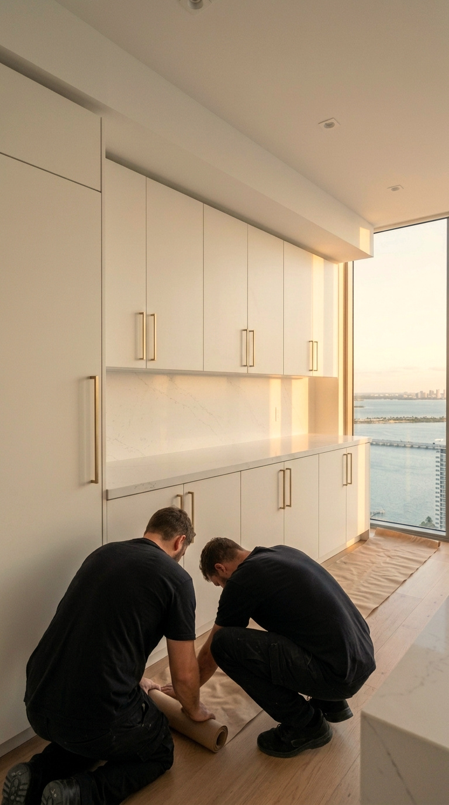
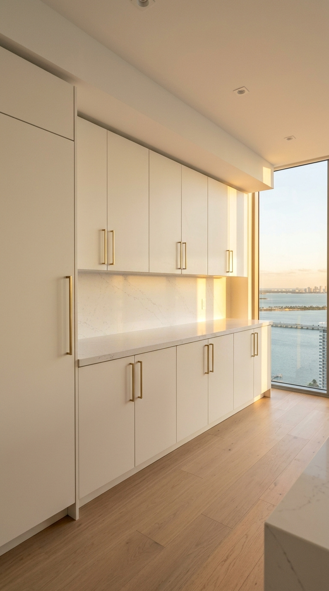
Flow → Vídeo → Fotogramas: imagen izquierda = Inicio, derecha = Fin. Modelo Veo 3.1 Fast, 8 s, vertical 9:16. Mantén presionada cada imagen para guardarla.
Ojo al animar: Sin cambios desde la ronda 1. La luz sube un poco (techo R-B de 45,6 a 52) y no puede pulsar. Salen por abajo a la derecha con el rollo, con la isla en el camino y riesgo de caras al girar. El LED sigue apagado hasta el último cuadro. Montaje: el preferido es 1,9-8,0 a 1,3x.
R60-04-K9.mp4
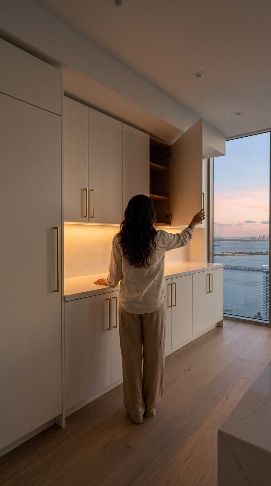
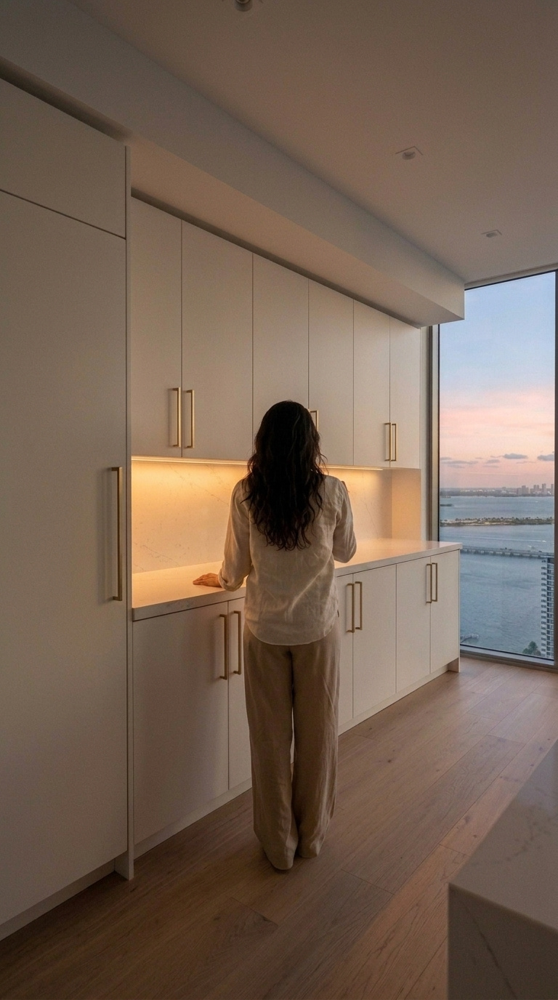
Flow → Vídeo → Fotogramas: imagen izquierda = Inicio, derecha = Fin. Modelo Veo 3.1 Fast, 8 s, vertical 9:16. Mantén presionada cada imagen para guardarla.
Ojo al animar: F19 aprobada: la X cerrada y en su hueco. Riesgos: la mano derecha no termina plana sobre la puerta, cuelga (el guion de la toma 15 dice «con su mano encima»). Veo puede hacer el cierre y además bajar la mano: es un solo gesto y se acepta. Si queda raro, cambiar el texto del guion, no la imagen. El techo sube un 7 % dentro del clip y no puede pulsar. El cierre tiene que ser suave, sin rebote y sin cambiarse de hueco. La toma 15 congela el último cuadro: si la puerta queda entreabierta, recortar el final donde ya está cerrada y congelar ESE cuadro.
R60-04-K10.mp4
7 clips · Veo 3.1 Fast · 70 créditos (+ reintentos solo si el QA lo pide)
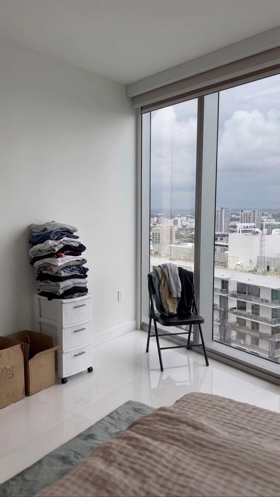
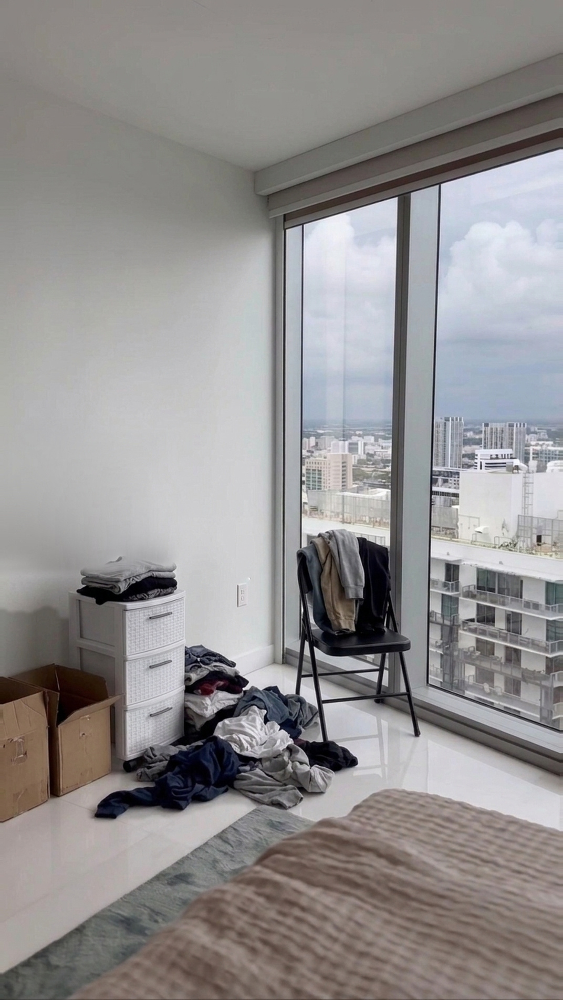
Flow → Vídeo → Fotogramas: imagen izquierda = Inicio, derecha = Fin. Modelo Veo 3.1 Fast, 8 s, vertical 9:16. Mantén presionada cada imagen para guardarla.
Ojo al animar: Correr f02 ANTES de animar. Si no, Veo hace aparecer una mancha en la pared al caer la pila. · Solo cae la pila: la silla (junto al vidrio), la torre, las cajas y el enchufe no se mueven. Al final quedan 3-4 prendas arriba: Veo no puede quitar ni añadir ninguna. · La ropa tiene que caer y quedar quieta antes de los 3,0 s, donde se corta a T2. En ese cuadro no puede quedar ninguna prenda en el aire.
R60-06-c1.mp4
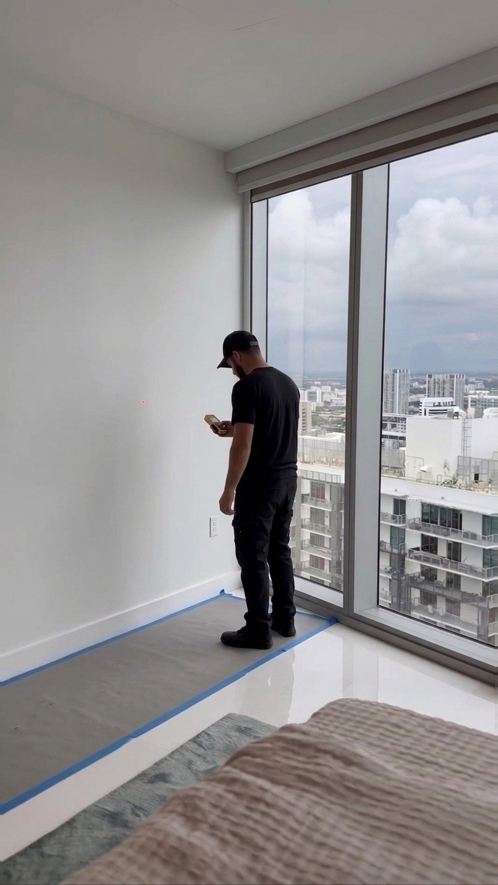
Flow → Vídeo → Fotogramas: imagen izquierda = Inicio, derecha = Fin. Modelo Veo 3.1 Fast, 8 s, vertical 9:16. Mantén presionada cada imagen para guardarla.
Ojo al animar: Sigue el riesgo de la ronda 1 (F08/F09 sin cambios): A está de perfil con barba. Veo no le puede girar la cabeza hacia la cámara. Revisar los cuadros 25-75 %. · Sin pantalla encendida y sin números legibles. Solo el punto rojo en 308,865, sin haz. · Hay orejas y franjas de mejilla de tres cuartos en F10, F14 y F16. Veo no puede girar ninguna cabeza hacia la cámara ni el vidrio: revisar los cuadros 25-75 % de c5, c7 y c8. · La gorra de B en F10 tiene una banda trasera clara, y en F07, F08 y F12 hay placas. No pueden leerse como logo ni mostrar letras.
R60-06-c4.mp4
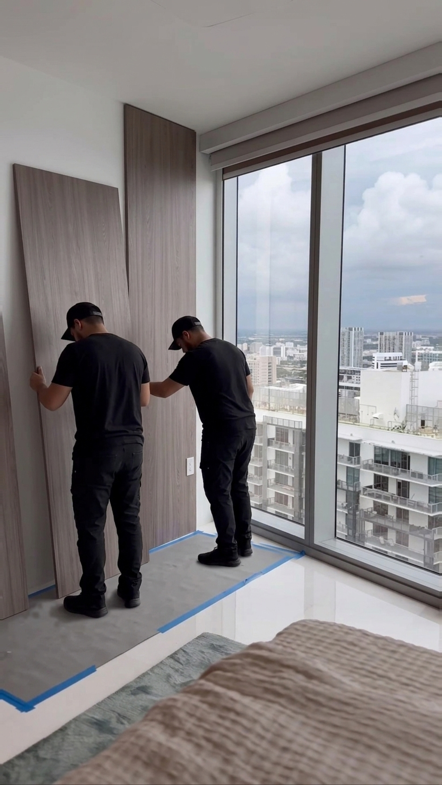
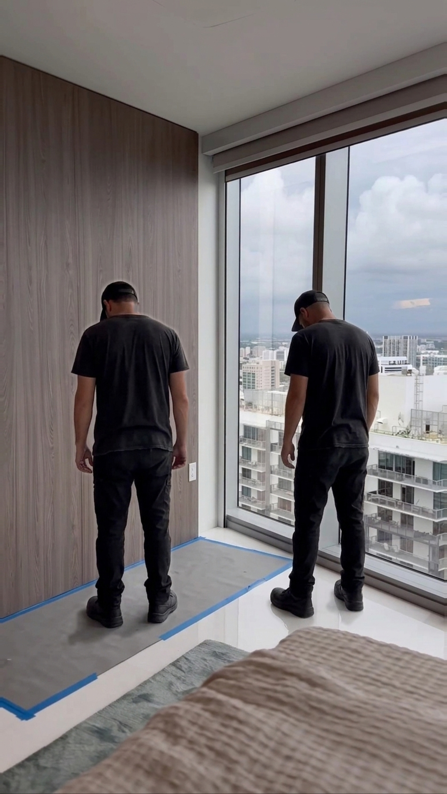
Flow → Vídeo → Fotogramas: imagen izquierda = Inicio, derecha = Fin. Modelo Veo 3.1 Fast, 8 s, vertical 9:16. Mantén presionada cada imagen para guardarla.
Ojo al animar: F07 tiene una 3.ª hoja en el borde izquierdo (x 0-70) que en F10 no está. El prompt de Veo debe hacer que se enderece junto con la de adelante o que salga de cuadro. Si aparece o desaparece sola, montaje: recortar el borde izquierdo un 7 % (crop 1000x1778 escalado) en c5. · En F10, B acaba frente al vidrio y fuera de la protección. En c5 tiene que caminar hasta ahí después de soltar la hoja: es una segunda acción. Si Veo lo teletransporta, montaje: corte seco al 75 % sobre F11 (el corte F10->F11 está limpio). · La mano izquierda de A cuelga junto al enchufe: no puede tocarlo ni acercarse a la pared. · Hay un halo claro de 2-3 px alrededor de A en F10. Si Veo lo convierte en contorno brillante, el último cuadro se nota: cortar al 90 % y pasar a F11. · La protección y la cinta son las de F11 en F07 y F10-F16, y no saltan en los cortes. Hay un borde suave entre la esquina baja derecha de la base y la protección (prep): Veo no puede 'derretir' el pie de la base.
R60-06-c5.mp4
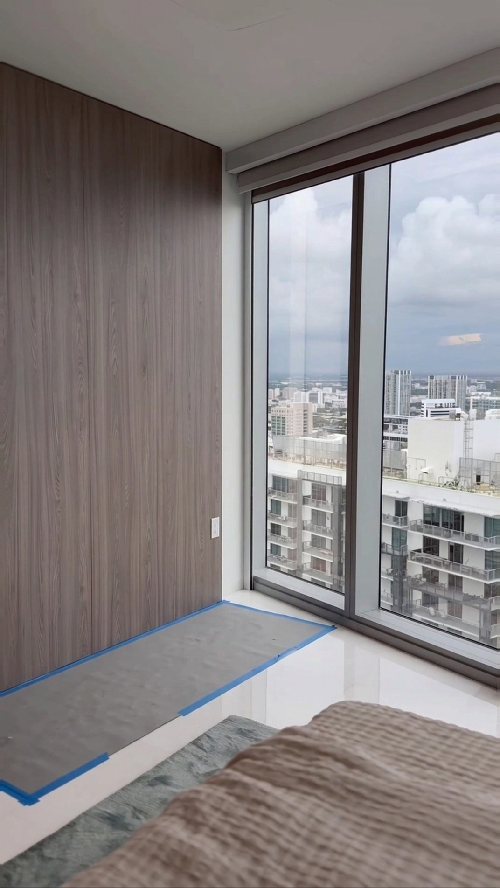
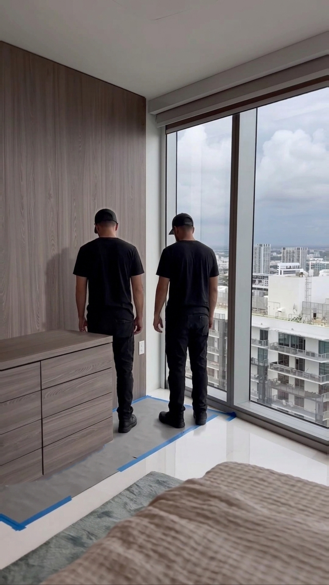
Flow → Vídeo → Fotogramas: imagen izquierda = Inicio, derecha = Fin. Modelo Veo 3.1 Fast, 8 s, vertical 9:16. Mantén presionada cada imagen para guardarla.
Ojo al animar: En F12, A termina pegado al lado derecho de la base, con una pierna oculta tras ella. Veo no puede meterle la pierna DENTRO del mueble. Revisar los cuadros 75-100 %; si atraviesa, corte seco al 75 % y pasar a F13. · La base termina en x ~365, antes del enchufe, y entra cargada por el borde derecho, sin aparecer de la nada. La veta no hierve.
R60-06-c6.mp4
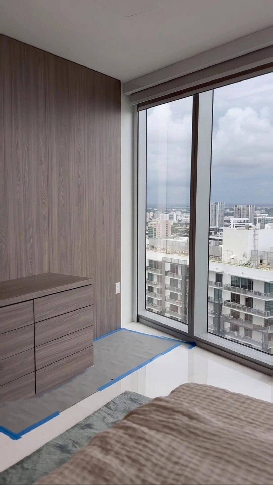
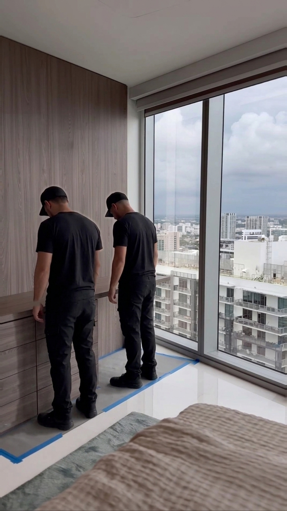
Flow → Vídeo → Fotogramas: imagen izquierda = Inicio, derecha = Fin. Modelo Veo 3.1 Fast, 8 s, vertical 9:16. Mantén presionada cada imagen para guardarla.
Ojo al animar: F14 se queda con 13/16: B tapa el enchufe y la pata, y el tramo de tablero entre A y B es de NB2. Recomendación de montaje: en c7 usar el tramo 0-75 % (el escritorio ya apoyado en la base y la pata) y hacer corte seco a F15. No mostrar el último cuadro. · Es UN solo tablero, apoyado en la tapa de la base y en la pata. No se monta un segundo tablero, y nadie queda entre la pata y el vidrio mientras lo colocan. · El escritorio en L mide unos 2 m. Pasa entre la cama y el vidrio sin atravesar ninguno de los dos.
R60-06-c7.mp4
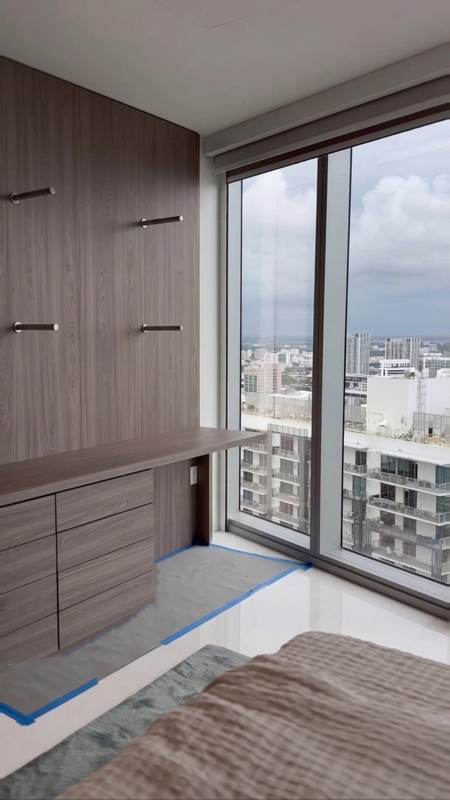
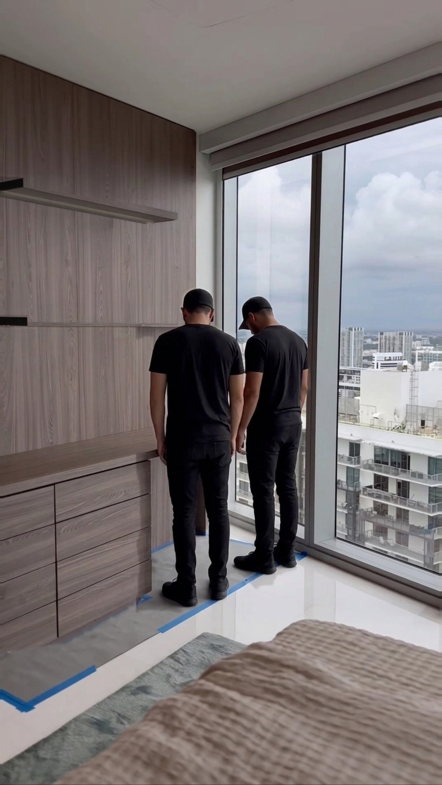
Flow → Vídeo → Fotogramas: imagen izquierda = Inicio, derecha = Fin. Modelo Veo 3.1 Fast, 8 s, vertical 9:16. Mantén presionada cada imagen para guardarla.
Ojo al animar: Correr f16 ANTES de animar. Con el F16 actual, las repisas se salen del revestimiento y queda una varilla a la vista. · Con el F16 nuevo, las varillas altas de F15 (y 440-495) quedan unos 20 px por debajo del tablero de la maestra. En el clip, la repisa se calza sobre ellas y las tapa: si una varilla desaparece sin repisa encima, rechazar. · A y B terminan delante de la pata y el enchufe, con B junto al vidrio. Las manos quedan vacías, sin herramientas ni teléfonos, y el LED sigue apagado durante todo el clip.
R60-06-c8.mp4
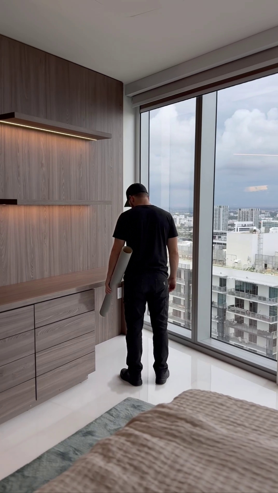
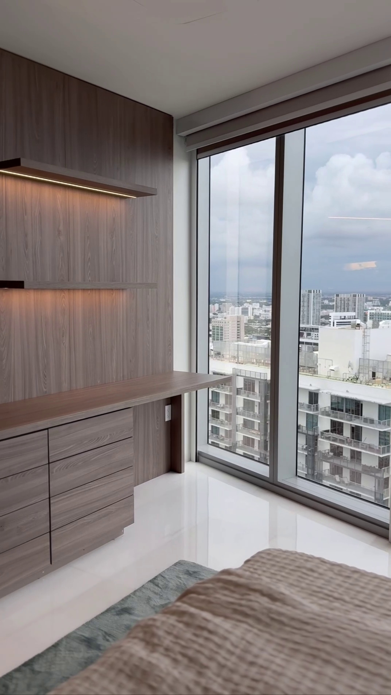
Flow → Vídeo → Fotogramas: imagen izquierda = Inicio, derecha = Fin. Modelo Veo 3.1 Fast, 8 s, vertical 9:16. Mantén presionada cada imagen para guardarla.
Ojo al animar: F17 ya cuadra con F19 al píxel. Veo tiene que terminar SIN A y sin su reflejo en el piso, con las rayas del LED como en la maestra. El último cuadro se compara con F19 (≤2 px). Si sobra algo, montaje: corte seco a F19 en cuanto A sale por la derecha. · La mano del rollo queda junto al enchufe: no puede tocarlo nunca, porque se leería como enchufar el LED. A sale por el borde derecho, detrás de la cama.
R60-06-c9.mp4